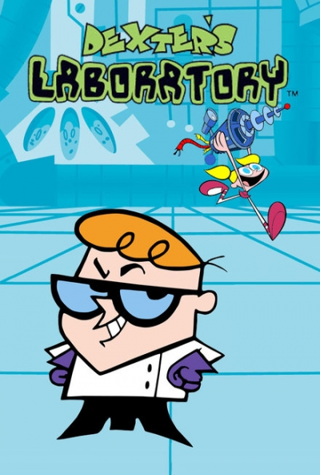

Dexter's laboratory

Year: 1980
Genere: Cartoon for Childs and adults
Authors: Federick cumberbach
Description: The Angry Beavers is an American animated sitcom created by Mitch Schauer for Nickelodeon. The series revolves around Daggett and Norbert Beaver, two young beaver brothers who have moved out of their parents' home to become bachelors in the forest near the fictional Wayouttatown, Oregon